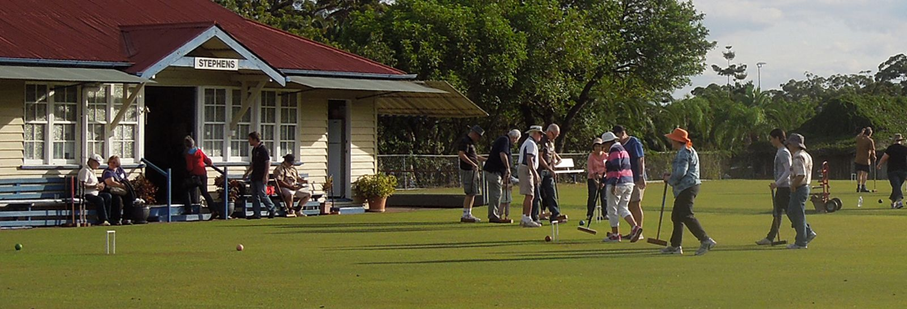
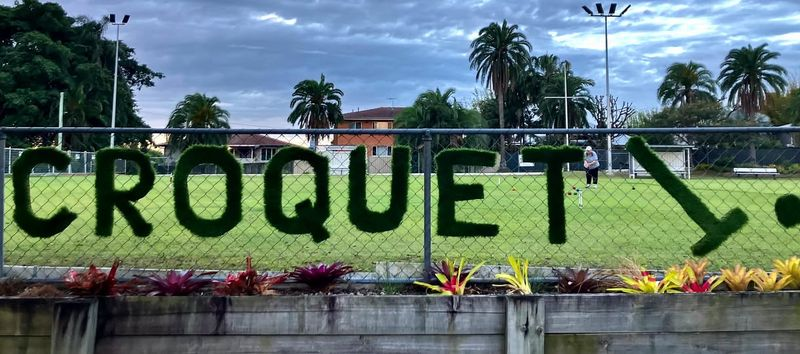
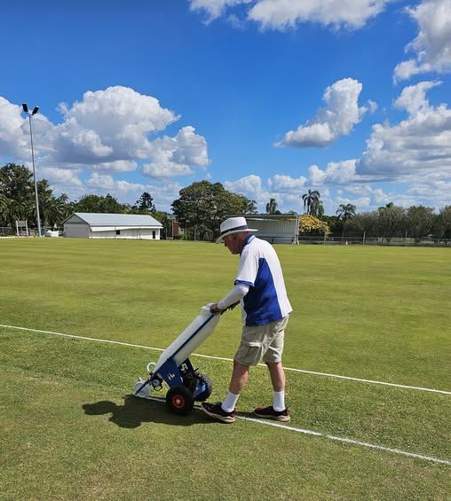

The clubhouse and lawns at Stephens
StephensCroquet Club, Yeronga
Come join uson the lawns
Croquet at Yeronga Park, Brisbane, since 1923. We play on Wednesday, Friday, Saturday and Sunday, and new players are always welcome.
Come and try, it's freeOr phone the club on 0413 732 986
When would you like to play?
- Wednesday morningAssociation Croquet, 9.45am
- Friday afternoonGolf Croquet, 3.00pm
- Saturday afternoonAssociation Croquet, 12.45pm
- Sunday afternoonGolf Croquet, 3.00pm
Golf Croquet starts an hour earlier from May to August.
Playing times and fees
FreeCome and try
Have a go. It's free.
Come on any play day, meet a member and have your first shots with a club mallet. Coaching and gear are provided. Flat shoes are all you need.
How to get started


Bring the party to the lawn
A team day, a birthday, a reunion or a Christmas party: book the courts, and we teach everyone to play.
Croquet parties and hireThe "Good company" picture is a film still from Croquet Australia, not taken at Stephens.
- WednesdayAssociation Croquet9.45am
- FridayGolf Croquet3.00pm September to April2.00pm May to August
- SaturdayAssociation Croquet12.45pm
- SundayGolf Croquet3.00pm September to April2.00pm May to August
Visitors welcome on any play day.
Membership
One fee a year covers your green fees, insurance and club championships.
- Try a session or two, free
- Pick Golf or Association Croquet
- Join the club for the year
Stories from the club
The newest from Stephens, as told on HOOPLA, the Croquet Queensland news site.



